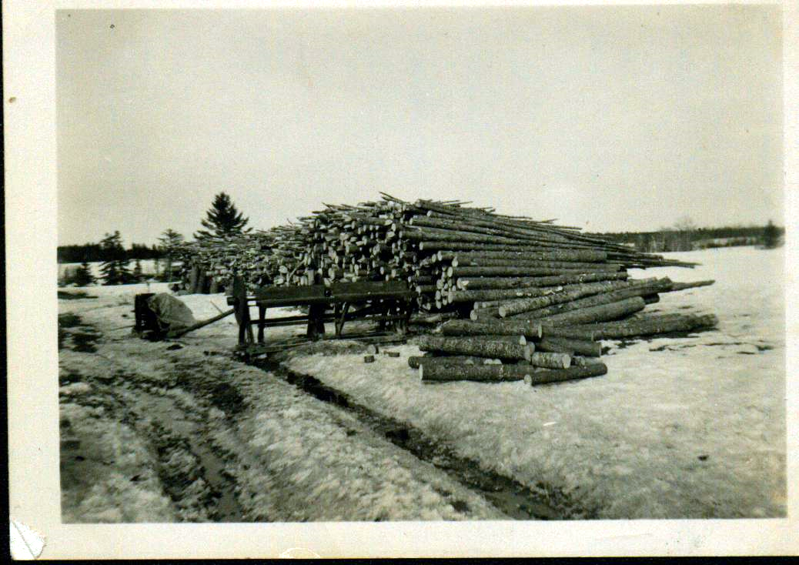
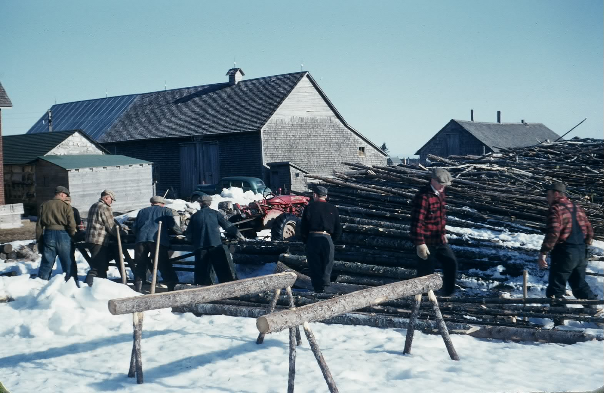

The Family Chronicle
No. 184 March 25, 2010
____________________________________________________________________


A wood pile and a wood cutter
at Norman Glendenning’s
Undated, Glendenning collection
The following is reprinted from Generations, the Journal of the New Brunswick Genealogical Society, (Winter 2009) with permission of the author, George H Hayward.
My recollections of cutting, blocking and splitting our winter’s wood are much the same as those recounted below except for the use of a drag saw. As I recall logs too large to lift onto the table, were blocked by hand using a crosscut saw...
What's Worth Writing About - Cutting Firewood
Introduction: I grew up in the Parish of Simonds, Carleton Co., N.B. From age 3 to 11 I lived on the Charlie Ebbett farm. Ivan was my younger brother. Arch Ginson 's drag saw was similar to the one in the: picture on the cover of this issue. In place of a horsepower he had a Waterloo engine, which was common in rural Carleton Co. in the 1930's, but horsepower’s were still in use at that time too.
A little beyond the wagon shed on the Charlie Ebbett farm there was a pile of wood. Sometimes it was in long lengths waiting to be sawed into blocks. Sometimes it was in blocks waiting to be split. And sometimes it was split into pieces that would fit into the firebox in the kitchen range, with larger chunks set aside for the triple heater.
After the ground was frozen in December, and before the snow was so deep that it was difficult to travel in the fields and through the woods, Dad would harness the horses in the morning and hitch them to the bobsleds. Ivan and I would often go with him on the sleds, or on very cold mornings walk behind to keep warm, past the barn and about a mile out through the fields to the woods.
Mum would make sandwiches, roast beef or pork, sometimes chicken or turkey, which we took with us, along with cookies or doughnuts. At noon Dad would build a fire, boil the kettle, and thaw the sandwiches. The kettle, a five pound lard pail with a wire bail for a handle, was suspended over the fire on a pole about an inch in diameter and six or seven feet long, laid in the "Y" of a forked stick driven into the ground beside the fire. Snow was melted until there was enough water for tea.
There was an art to boiling the kettle. The water had to be brought to a rolling boil over the fire, then the kettle swung away with the pole and set in the snow. When the water stopped boiling a handful of loose tea was thrown into the kettle. It was then swung back over the fire until the water boiled a second time, after which it was immediately removed and a half cup of cold water dashed in, to settle the tea grounds. Then the brew was poured into tin cups and drunk without milk or additives.
Dad worked in the lumber woods from the time he was a teenager, and was good with an axe, a cross-cut saw and a peavey. He cut maple, birch and beech for firewood, and a few cedars for kindling. He trimmed off the smaller branches in the woods and cut the logs and larger branches into twelve-foot lengths. Using one of the horses, a whiffletree and a twitching chain, he yarded the logs to a landing as they were cut. Late in the afternoon, using his peavey to roll the larger logs on to the bobsleds, he made the load for the journey back to the house. The bigger logs were put on the bottom, and the two outside ones were fastened to the bobsled rockers with corner binds (chains run through a hole bored in the rocker with an auger, then wrapped around the log and secured with grab hooks). Smaller logs were put on top and held in place by top chains. On cold days, the runners squeaked on the snow, and icicles formed on the horses' nostrils as they inhaled and exhaled more heavily while pulling the big load.
Late in March or early in April, Arch Ginson would arrive in the community with his wood sawing outfit, having brought it across the river on the ice from Upper Brighton. He would saw for several of the farmers in Simonds, including us. First he would set up the circular saw and cut the smaller logs and branches into 16-inch lengths. Afterward the drag saw would be moved into place and the larger logs, which were too heavy to lift onto the table of the circular saw, would also be cut into 16-inch lengths. A Waterloo engine, steam gently rising from its open reservoir, with two three-foot-diameter flywheels, one on each side, spark plug fired by a magneto, and connected by a wide leather drive belt to the sawing machines, was used for power.
In the 1930s we had no money. Few farmers in New Brunswick did. So Arch, when he was finished sawing, took toll - he took with him when he left some of the wood as compensation for sawing.
After that, Dad would get out his splitting axe, and a couple of steel wedges for the difficult blocks. He would split all the blocks larger than about 3 inches in diameter and throw them in a neat pile shaped like an igloo to season during the summer. In the fall he would wheelbarrow the dry wood into the woodshed and rank it, all the way up to the ceiling, where it would be protected from the winter snow and ice, and where it was close to the house. And after the snow fell, the horses would be harnessed again and we would go to the woods to cut the next season's fuel supply.
Beside each stove in the house there was a wood box. Ivan and I were expected to keep them filled.
The Family Chronicle (Copyright) is an occasional newsletter published by Don Glendenning and posted on the family website. It is intended to share information about my family, community and the times in which I grew up. While every effort is made to be accurate, errors are likely to occur. Comments, enquiries and information may be sent to 62 Queen Elizabeth Drive, Charlottetown, PEI, C1A 3A9. Tel: 902 892 5859. Email: don@glendenning.net Web: www.glendenning.net/don